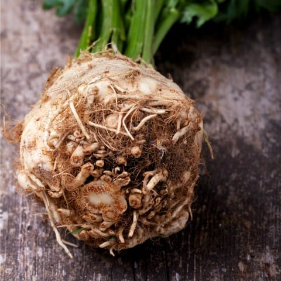

Celeriac and celery originated in the Mediterranean Basin. It was mentioned in the Iliad and Odyssey as selinon.
Celeriac (Apium graveolens var. rapaceum), also called celery root, knob celery, and turnip-rooted celery (although it is not a close relative of the turnip), is a variety of celery cultivated for its edible stem or hypocotyl, and shoots. Celeriac is like a root vegetable except it has a bulbous hypocotyl with many small roots attached. In the Mediterranean Basin and in Northern Europe, celeriac is widely cultivated. It is also cultivated in North Africa, Siberia, Southwest Asia, and North America. In North America, the 'Diamant' cultivar predominates.